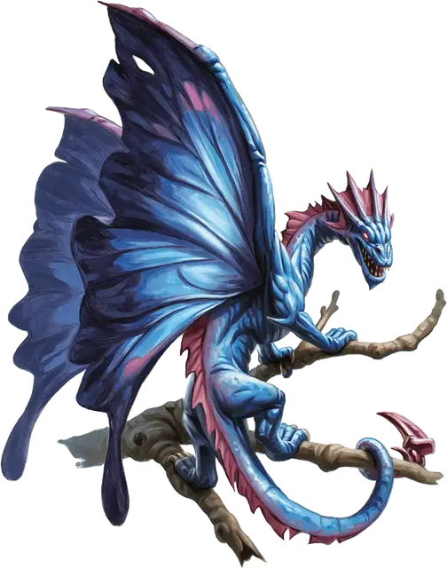

Волшебный дракончик (Оранжевый)
Faerie Dragon (Orange)
Крошечный Дракон, хаотично-добрый

Класс Доспеха 15
Хиты 14 (4к4 + 4)
Скорость 10 футов, летая 60 футов
| мод | спас | ||
|---|---|---|---|
| СИЛ | 3 | −4 | −4 |
| ЛОВ | 20 | +5 | +5 |
| ТЕЛ | 13 | +1 | +1 |
| мод | спас | ||
|---|---|---|---|
| ИНТ | 14 | +2 | +2 |
| МДР | 12 | +1 | +1 |
| ХАР | 16 | +3 | +3 |
Навыки Восприятие +3, Магия +4, Скрытность +7
Чувства тёмное зрение 60 футов, пассивное Восприятие 13
Языки Драконий, Сильван
Опасность 1 (200 опыта)
Бонус мастерства +2
Среда обитания Лес
Особенности
Превосходная невидимость. Дракончик может бонусным действием магическим образом стать невидимым, пока концентрируется (как при концентрации на заклинании). Всё снаряжение, которое дракончик несёт или носит, становится невидимым вместе с ним.
Ограниченная телепатия. При помощи телепатии дракончик может магическим образом общаться со всеми другими волшебными дракончиками в пределах 60 футов.
Сопротивление магии. Дракончик совершает с преимуществом спасброски от заклинаний и прочих магических эффектов.
Врождённое колдовство. Базовой характеристикой дракончика является Харизма (Сл спасброска от заклинания 13). Он может накладывать некоторые заклинания, не нуждаясь в материальных компонентах. Когда дракончик взрослеет и меняет цвет, он получает дополнительные заклинания, как показано ниже.
• 1/день каждое: волшебная рука [mage hand], малая иллюзия [minor illusion], пляшущие огоньки [dancing lights], сверкающие брызги [color spray]
Действия
Укус. Рукопашная атака оружием: +7 к попаданию, досягаемость 5 футов, одно существо. Попадание: Колющий урон 1.
Благодушное дыхание (перезарядка 5–6). Дракончик выдыхает облако газа, вызывающего эйфорию, на одно существо, находящееся в пределах 5 футов от него. Цель должна преуспеть в спасброске Мудрости Сл 11, иначе в течение 1 минуты не сможет совершать реакции, и в начале каждого своего хода должна будет бросать к6, чтобы определить своё поведение в этом ходу:
• 1–4. Цель не совершает ни действия, ни бонусные действия, и всё своё перемещение тратит на перемещение в случайным образом выбранном направлении.
• 5–6. Цель не перемещается, и единственное, что может делать в этом ходу, это совершение спасброска Мудрости Сл 11, оканчивая эффект на себе при успехе.
Описание
Волшебный дракончик — дракон размером с кошку с крыльями бабочки. У него острые зубы, а восторг он выражает подёргиванием хвоста. Его игривое настроение исчезает только если на него напасть.
Невидимые озорники. Присутствие волшебного дракончика выдаёт лишь его сдавленный смешок. Дракончик остаётся вне поля зрения, скрытно наблюдая за тем, как жертвы разбираются с его розыгрышами. Когда веселье заканчивается, он может показаться, в зависимости от настроения своих «жертв».
Дружелюбные и смышлёные. У волшебного дракончика острый ум, любовь к сокровищам и хорошей компании и озорное чувство юмора. Путешественники могут сыграть на драконьей натуре дракончика, предложив ему «сокровища» в виде конфет, выпечки и побрякушек в обмен на информацию и безопасный проход через его территорию.
Цвет и возраст. Чешуя волшебного дракончика меняет оттенок с возрастом, проходя все цвета радуги. У всех волшебных дракончиков есть способности к магии, и они получают доступ к новым заклинаниям по мере взросления.
| Цвет дракона | Возрастной диапазон |
| Красный | 5 лет и меньше |
| Оранжевый | 6 - 10 лет |
| Желтый | 11 - 20 лет |
| Зеленый | 21 - 30 лет |
| Голубой | 31 - 40 лет |
| Синий | 41 - 50 лет |
| Фиолетовый | 51 год и старше |